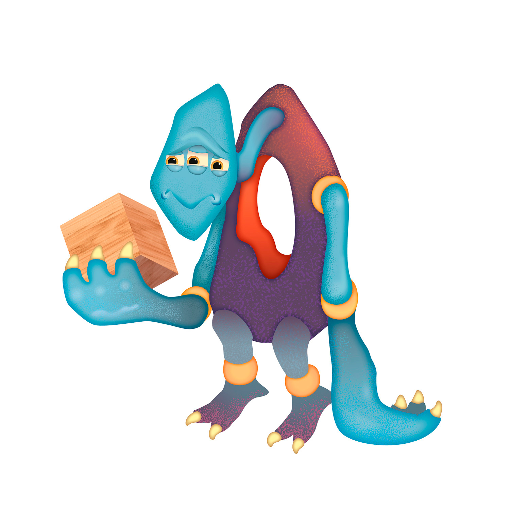

Annika is a brand designer based in Vancouver, British Columbia and a student at Capilano University's IDEA School of Design. When I'm not working on a school project, I am always open to freelancing. If you need design work, we should talk.
© 2020-2024. Hand crafted with ❤ + Flexbox + CSS Grid by James Neufeld. Customized by Annika Yi